คู่มือใช้งานเครื่องมือ · ระดับ Free
การสูญเสียความร้อนและฉนวนของอุปกรณ์
Equipment Heat Loss & Insulation
FREE
สำหรับช่างเทคนิคที่เพิ่งเริ่มงานฉนวนความร้อน — อ่านแล้วทำตามได้เอง
ใช้เวลาฝึกประมาณ 60 นาที
เคสตัวอย่าง: โรงงาน A ถังผสม MT-01 ร้อน 150 °C ยังไม่หุ้มฉนวน
อ.หนึ่ง กลับทวี / Aj. Nueng Klubtavee
tripleeenergytools.com
หน้าจอเครื่องมือ — เปิดได้จากเมนู Free ของเว็บไซต์
รุ่นเครื่องมือ: Free commit b68a0d7 · จับภาพ 25 พ.ย. 2569 · คู่มือ Rev03
เครื่องมือนี้ตอบคำถามอะไร
คู่มือใช้งาน · คำนวณการสูญเสียความร้อนและฉนวนของอุปกรณ์ (Equipment Heat Loss & Insulation Calculator) · ระดับ Free
2 / 33
| คำถามหน้างาน | ใช้ตรงไหน | เคสโรงงาน A ได้ |
|---|---|---|
| ถังที่ยังไม่หุ้มฉนวนเสียความร้อนเท่าไร | แท็บ 2 ผลการคำนวณ | 46.02 kW |
| หุ้มฉนวนแล้วเหลือเท่าไร ผิวร้อนเท่าไร | แท็บ 2 ผลการคำนวณ | 1.79 kW · ผิว 51.8 °C |
| ประหยัดเงินและลด CO₂ ปีละเท่าไร คืนทุนกี่ปี | แท็บ 2 เศรษฐศาสตร์ | 621,739 บาท/ปี · 91.72 tCO₂e |
| ผิวฉนวนปลอดภัยต่อการสัมผัสไหม | แท็บ 2 ความปลอดภัย | ผิว 51.8 °C เกณฑ์ 56.0 °C |
| ควรหุ้มหนาเท่าไรจึงคุ้มที่สุด | แท็บ 3 ความหนาที่เหมาะสม | 175 mm |
| ทำตารางความหนาแนะนำไว้ใช้ทั้งโรงงาน | แท็บ 3 ตารางความหนา | ตารางตามขนาดท่อ/อุณหภูมิ |
💡 เคล็ดลับ
กรอกแท็บ 1 ให้ครบก่อน — แท็บ 2 และ 3 คำนวณตามทันทีที่แก้ค่า
แผนที่หน้าจอ
คู่มือใช้งาน · คำนวณการสูญเสียความร้อนและฉนวนของอุปกรณ์ (Equipment Heat Loss & Insulation Calculator) · ระดับ Free
3 / 33
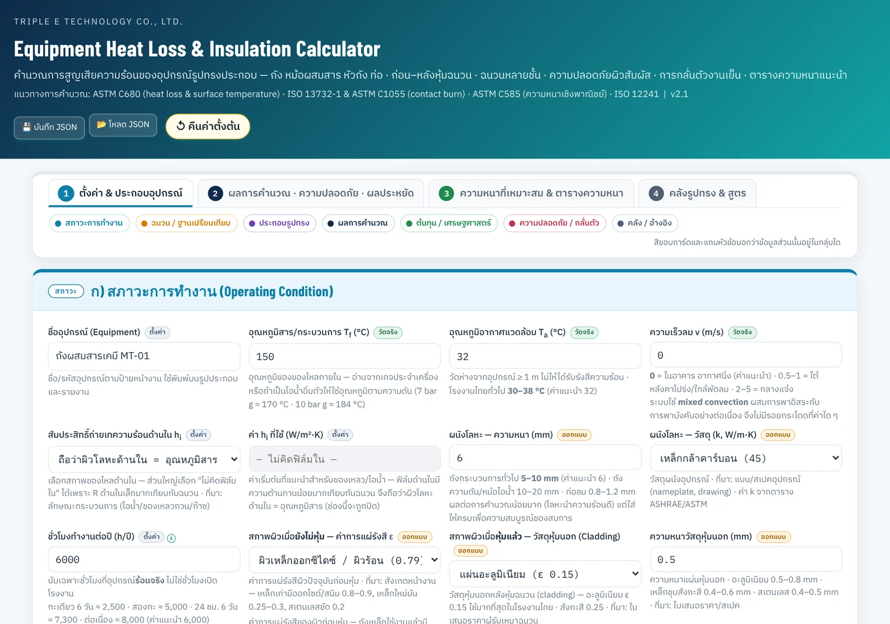
1
2
3
4
5
1
แท็บ 4 แท็บ — 1 ตั้งค่า · 2 ผลและความปลอดภัย · 3 ความหนา · 4 คลังรูปทรงและสูตร
2
สีของกลุ่มข้อมูล — ขอบการ์ดสีเดียวกัน = ข้อมูลกลุ่มเดียวกัน
3
บันทึก / โหลด JSON
4
ค่าตั้งต้น — ล้างทุกช่องกลับเป็นตัวอย่าง
5
การ์ดแรก: สภาวะการทำงาน
💡 เคล็ดลับ
ไม่มีปุ่มคำนวณ — ผลเปลี่ยนทันทีที่พิมพ์ ดูผลที่แท็บ 2
เปิดบนมือถือ สลับภาษา และป้ายสีข้างชื่อช่อง
คู่มือใช้งาน · คำนวณการสูญเสียความร้อนและฉนวนของอุปกรณ์ (Equipment Heat Loss & Insulation Calculator) · ระดับ Free
4 / 33
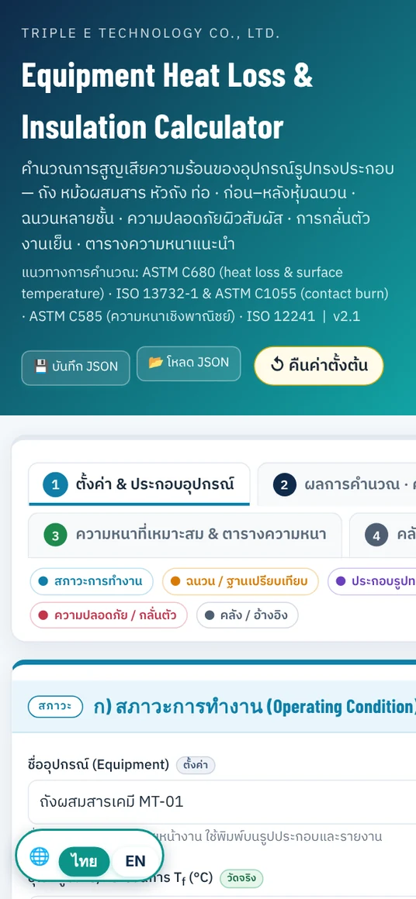
ใช้บนมือถือหน้างานได้ — การ์ดเรียงลงมาเป็นแถวเดียว · ทุกแท็บอยู่ในกรอบจอ (กว้าง 390 px) ไม่ต้องเลื่อนซ้ายขวา
ปุ่ม 🌐 ไทย | EN ลอยอยู่ด้านข้าง กดสลับภาษาได้ ค่าที่กรอกไว้ไม่หาย
ป้าย วัดจริง = วัดหน้างาน · ออกแบบ = อ่านจากแบบ/สเปก · ตั้งค่า = เลือกเอง
ใต้ทุกช่องมีคำอธิบายบอกที่มาของค่าและช่วงที่พบบ่อย
💡 เคล็ดลับ
จดค่าลงแบบฟอร์ม (สไลด์ 6) ที่หน้างานก่อน แล้วค่อยกรอก จะผิดน้อยกว่า
คำศัพท์ 7 คำที่ต้องรู้ก่อนเริ่ม
คู่มือใช้งาน · คำนวณการสูญเสียความร้อนและฉนวนของอุปกรณ์ (Equipment Heat Loss & Insulation Calculator) · ระดับ Free
5 / 33
| คำ | ความหมายแบบสั้น | จำง่าย ๆ |
|---|---|---|
| การสูญเสียความร้อน Q | ความร้อนที่ออกจากผิวอุปกรณ์สู่อากาศ (kW) — พาความร้อน + แผ่รังสี | ความร้อนที่จ่ายเงินซื้อแต่ทิ้งไป |
| อุณหภูมิผิว Ts | อุณหภูมิผิวนอกสุดที่มือจะไปสัมผัส | ใช้ตัดสินความปลอดภัย |
| ค่าการแผ่รังสี ε | ผิวแผ่ความร้อนได้มากแค่ไหน (0–1) | เหล็กออกซิไดซ์ 0.79 · อะลูมิเนียม 0.15 |
| ค่า k ของฉนวน | ค่าการนำความร้อนของฉนวน (W/m·K) — สูงขึ้นเมื่อฉนวนร้อนขึ้น เครื่องมือใช้ตารางค่าสูงสุดตามมาตรฐานวัสดุ ASTM | ยิ่งต่ำยิ่งกันความร้อนดี |
| ฐานก่อนปรับปรุง | สภาพเดิมที่ใช้เทียบผลประหยัด — เปลือย หรือมีฉนวนเก่าอยู่แล้ว | เลือกผิด ผลประหยัดเกินจริง |
| เกณฑ์ผิวสัมผัส | อุณหภูมิผิวที่เริ่มทำให้ผิวหนังบาดเจ็บ ขึ้นกับเวลาสัมผัสและวัสดุผิว | จับนาน = เกณฑ์ต่ำลง |
| Emission Factor (EF) | kgCO₂e ต่อหน่วยเชื้อเพลิง ใช้แปลงเชื้อเพลิงที่ประหยัดเป็นก๊าซเรือนกระจก | ค่าตั้งต้นอ่านจากคลัง EF ของเว็บ (อบก.) |
💡 เคล็ดลับ
ค่าตั้งต้นของเกณฑ์และราคาต่าง ๆ แก้ได้ทุกช่อง — ระบุในรายงานว่าใช้ค่าจากที่ใด
เตรียมข้อมูลก่อนลงหน้างาน (แบบฟอร์มจดค่า)
คู่มือใช้งาน · คำนวณการสูญเสียความร้อนและฉนวนของอุปกรณ์ (Equipment Heat Loss & Insulation Calculator) · ระดับ Free
6 / 33
| หมวด | ข้อมูลที่ต้องจด | เครื่องมือวัด / แหล่งข้อมูล | ค่าโรงงาน A |
|---|---|---|---|
| สภาวะ | อุณหภูมิสารในถัง · อุณหภูมิอากาศรอบถัง · ลม | เทอร์โมมิเตอร์ที่ถัง · ข้อมูลกระบวนการ | 150 · 32 °C · ลมสงบ |
| ผิวเดิม | สภาพผิวโลหะ · ความหนาผนัง | ดูด้วยตา · แบบถัง | เหล็กออกซิไดซ์ · 6 mm |
| รูปทรง | ชิ้นส่วนแต่ละชิ้น: ชนิด · เส้นผ่านศูนย์กลาง · ความสูง | ตลับเมตร · แบบถัง | หัววงรี · ลำตัว D 2 × H 3 m · หัว F&D |
| ฉนวนที่จะใช้ | ชนิด · ความหนา · วัสดุหุ้มนอก | ใบเสนอราคา · สเปก | ใยหิน 75 mm · แผ่นอะลูมิเนียม |
| เวลาและเงิน | ชั่วโมงทำงาน/ปี · เชื้อเพลิง · ราคา · ประสิทธิภาพหม้อไอน้ำ | บันทึกการผลิต · บิล | 6,000 ชม. · น้ำมันเตา 22 บาท/ลิตร · 85 % |
| ความปลอดภัย | จุดที่คนเข้าถึง · เวลาสัมผัสที่เป็นไปได้ | เดินดูหน้างาน | ทางเดิน · จับชั่วครู่ 10 วินาที |
⚠️ ระวัง
ผิวถังเปลือย 150 °C ลวกมือได้ทันที — อย่าสัมผัสด้วยมือเปล่า วัดผิวด้วยเครื่องวัดแบบไม่สัมผัสหรือหัววัดผิว และสวมถุงมือกันความร้อน
ขั้นที่ 1
แท็บ 1 ก): สภาวะการทำงาน
คู่มือใช้งาน · คำนวณการสูญเสียความร้อนและฉนวนของอุปกรณ์ (Equipment Heat Loss & Insulation Calculator) · ระดับ Free
7 / 33
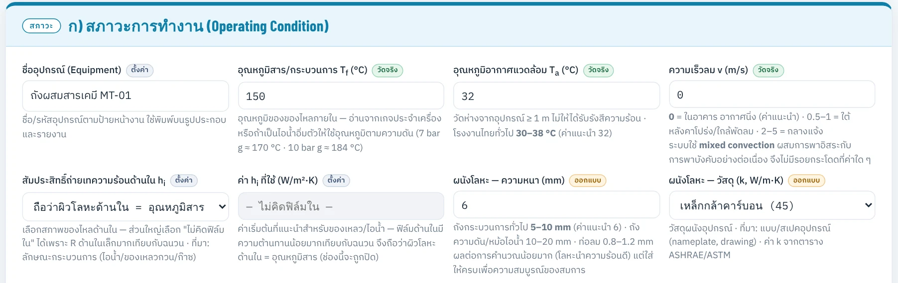
1
2
3
4
5
6
1
ชื่ออุปกรณ์ — ขึ้นหัวรายงาน
2
อุณหภูมิสารภายใน (°C)
3
อุณหภูมิอากาศรอบอุปกรณ์ (°C)
4
ความเร็วลม (m/s) — ในอาคารลมสงบใส่ 0
5
สัมประสิทธิ์ความร้อนด้านใน — ส่วนใหญ่ใช้ค่าตั้งต้น
6
ความหนาผนังโลหะ (mm) และชนิดโลหะ
วัดอุณหภูมิอากาศห่างจากผิวถังพอสมควร — ไม่ใช่อากาศร้อนที่ลอยขึ้นจากผิวถัง
ก) ต่อ: ชั่วโมงทำงานและผิวก่อน–หลังหุ้ม
คู่มือใช้งาน · คำนวณการสูญเสียความร้อนและฉนวนของอุปกรณ์ (Equipment Heat Loss & Insulation Calculator) · ระดับ Free
8 / 33
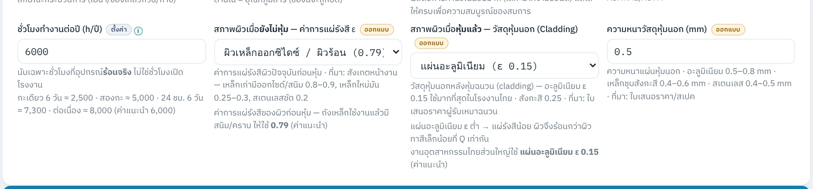
1
2
3
4
1
ชั่วโมงทำงานต่อปี — ใช้คิดผลประหยัด
2
ผิวเดิมก่อนหุ้ม (ε) — เหล็กออกซิไดซ์ 0.79
3
วัสดุหุ้มนอกหลังหุ้มฉนวน (ε) — แผ่นอะลูมิเนียม 0.15
4
ความหนาวัสดุหุ้มนอก (mm)
ε ของผิวเปลือยมีผลมาก: ผิวสนิม/ทาสีแผ่รังสีแรงกว่าผิวเงา — เลือกให้ตรงสภาพจริง
วัสดุหุ้มนอกมีผลต่ออุณหภูมิผิว: ผิวเงา (ε ต่ำ) แผ่รังสีน้อย ผิวจึงร้อนกว่าผิวทาสีที่ความหนาฉนวนเท่ากัน
ก-2): ความชื้นและการติดตั้งกลางแจ้ง
คู่มือใช้งาน · คำนวณการสูญเสียความร้อนและฉนวนของอุปกรณ์ (Equipment Heat Loss & Insulation Calculator) · ระดับ Free
9 / 33
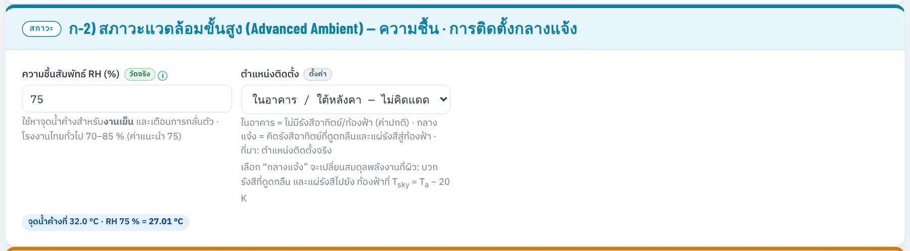
1
2
1
ความชื้นสัมพัทธ์ — ใช้กับงานเย็น (กันการกลั่นตัว)
2
ในอาคาร หรือกลางแจ้ง — กลางแจ้งคิดแดดและการแผ่รังสีสู่ท้องฟ้า
อุปกรณ์ร้อนในอาคาร (เคสโรงงาน A) ใช้ค่าตั้งต้นได้
อุปกรณ์กลางแจ้งให้เลือก "กลางแจ้ง" แล้วกรอกความเข้มแสงแดดและค่าดูดกลืนของผิว
ขั้นที่ 2
ข): ฉนวนความร้อน
คู่มือใช้งาน · คำนวณการสูญเสียความร้อนและฉนวนของอุปกรณ์ (Equipment Heat Loss & Insulation Calculator) · ระดับ Free
10 / 33
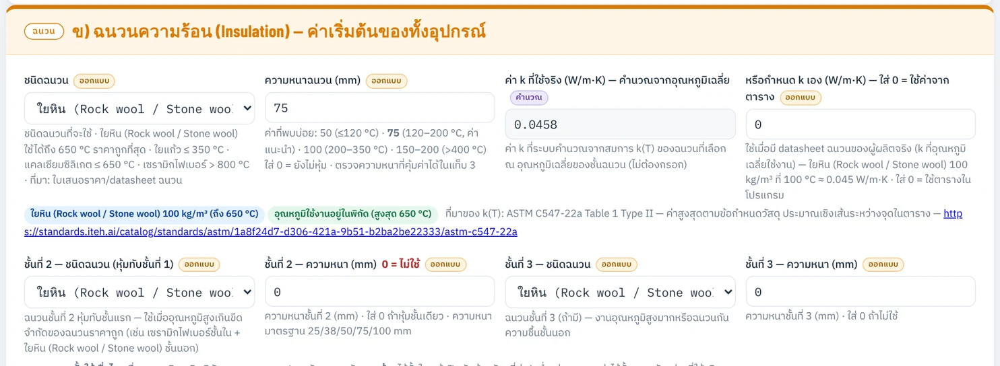
1
2
3
4
5
6
1
ชนิดฉนวน — ช่องแสดงชื่อเต็ม (ยาวก็ขึ้นบรรทัดใหม่) เช่น ใยหิน (Rock wool / Stone wool) 100 kg/m³ (ถึง 650 °C) · แต่ละชนิดมีอุณหภูมิใช้งานสูงสุดกำกับ
2
ความหนา (mm)
3
ค่า k ที่ใช้ 0.0458 W/m·K — k ที่อุณหภูมิเฉลี่ยของฉนวน จากตาราง ASTM
4
ใส่ค่า k จากเอกสารผู้ผลิตเองได้ — 0 = ใช้ค่าในคลัง
5
ชั้นที่ 2 — ฉนวนหลายชั้น
6
ชั้นที่ 3
เลือกฉนวนที่ทนอุณหภูมิสารได้ — ไม่ใช่อุณหภูมิผิว · ชนิดที่ทนไม่ถึงเครื่องมือจะเตือน
บรรทัดที่มาของ k(T) ใต้ช่องบอกมาตรฐานและตาราง (ใยหิน: ASTM C547 Type II) พร้อมลิงก์ — เป็นค่าสูงสุดตามข้อกำหนดวัสดุ ผลประหยัดจึงไม่สูงเกินจริง · มี datasheet ผู้ผลิตให้กรอกในช่อง 4
ค่าที่กรอกในการ์ดนี้เป็นค่าเริ่มต้นของทุกชิ้นส่วน — ชิ้นที่ต่างไปตั้งแยกได้ในขั้นที่ 4
ขั้นที่ 3
ข-2): ฐานเปรียบเทียบ "ก่อนปรับปรุง"
คู่มือใช้งาน · คำนวณการสูญเสียความร้อนและฉนวนของอุปกรณ์ (Equipment Heat Loss & Insulation Calculator) · ระดับ Free
11 / 33
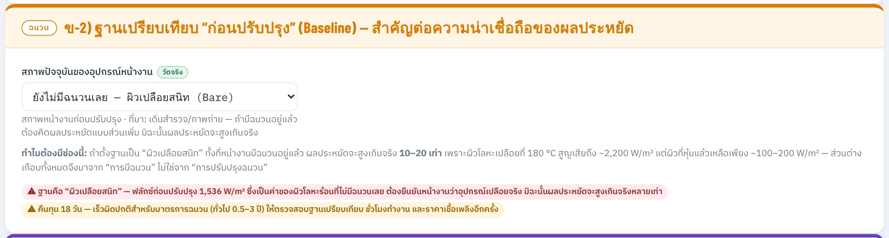
1
1
สภาพเดิม — ยังไม่มีฉนวน (เปลือย) หรือ มีฉนวนเก่าอยู่แล้ว
เคสโรงงาน A ถังยังเปลือย จึงเลือก ยังไม่มีฉนวนเลย
ถ้าถังมีฉนวนเก่าอยู่ ให้เลือก "มีฉนวนอยู่แล้ว" และกรอกฉนวนเก่า — เครื่องมือคิดผลประหยัดส่วนเพิ่มเท่านั้น
⚠️ ระวัง
เลือกฐานเปลือยทั้งที่มีฉนวนเก่าอยู่ ผลประหยัดจะเกินจริงหลายเท่า — เป็นข้อผิดพลาดที่พบบ่อยที่สุดในรายงานมาตรการฉนวน
ขั้นที่ 4
ค): ประกอบรูปทรงอุปกรณ์ — ชิ้นที่ 1
คู่มือใช้งาน · คำนวณการสูญเสียความร้อนและฉนวนของอุปกรณ์ (Equipment Heat Loss & Insulation Calculator) · ระดับ Free
12 / 33
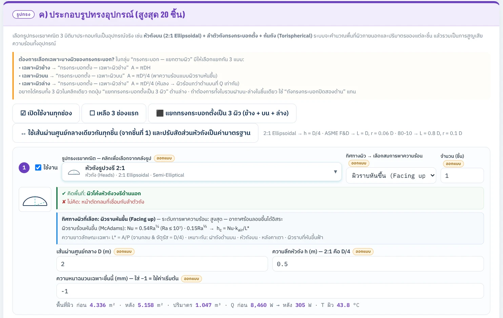
1
2
3
4
5
6
7
1
ใช้งาน — ติ๊กชิ้นที่ต้องการคิด (สูงสุด 20 ชิ้น)
2
รูปทรง — กดเพื่อเลือกจากคลัง
3
ทิศทางผิว — หันขึ้น · หันลง · ผนังตั้ง
4
จำนวนชิ้น
5
เส้นผ่านศูนย์กลาง D (m)
6
ความสูงหัวถัง h (m)
7
ความหนาฉนวนเฉพาะชิ้น — −1 = ใช้ค่าในการ์ด ข)
แยกอุปกรณ์เป็นชิ้นส่วนรูปทรงง่าย: หัวถังบน + ลำตัว + หัวถังล่าง · กรอบเขียว/แดงบอกว่าชิ้นนี้คิดผิวไหน และไม่คิดผิวไหน
ทิศทางผิวมีผลต่อการพาความร้อน — หัวถังบนหันขึ้น หัวถังล่างหันลง
ชิ้นที่ 2: ลำตัวทรงกระบอกตั้ง
คู่มือใช้งาน · คำนวณการสูญเสียความร้อนและฉนวนของอุปกรณ์ (Equipment Heat Loss & Insulation Calculator) · ระดับ Free
13 / 33
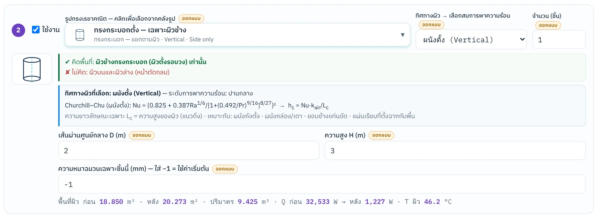
1
2
3
1
ทรงกระบอกตั้ง — เฉพาะผิวข้าง (ไม่รวมฝาบนล่าง เพราะคิดเป็นหัวถังแล้ว)
2
D 2 m
3
สูง 3 m
เลือกรูปทรงที่ "เฉพาะผิวข้าง" เมื่อมีหัวถังปิดอยู่แล้ว — ป้องกันการนับพื้นที่ซ้ำ
บรรทัดล่างของแต่ละชิ้นแสดงพื้นที่ ปริมาตร Q และ Ts ของชิ้นนั้นทันที
สรุปรูปทรงที่ประกอบแล้ว
คู่มือใช้งาน · คำนวณการสูญเสียความร้อนและฉนวนของอุปกรณ์ (Equipment Heat Loss & Insulation Calculator) · ระดับ Free
14 / 33
1
2
3
1
ใช้งาน 3 ชิ้น
2
พื้นที่ผิวก่อนหุ้ม 26.91 m²
3
พื้นที่ผิวหลังหุ้ม 29.96 m² — ใช้คิดราคาฉนวน
ทวนพื้นที่ลำตัวด้วยมือ: π × 2 × 3 = 18.85 m² ตรงกับตารางรายชิ้นส่วน
ใต้การ์ดนี้มีภาพประกอบรูปทรง — ใช้ตรวจว่าประกอบชิ้นส่วนถูกต้อง ไม่ขาด ไม่ซ้ำ
ขั้นที่ 5
แท็บ 2: ผลการคำนวณการสูญเสียความร้อน
คู่มือใช้งาน · คำนวณการสูญเสียความร้อนและฉนวนของอุปกรณ์ (Equipment Heat Loss & Insulation Calculator) · ระดับ Free
15 / 33
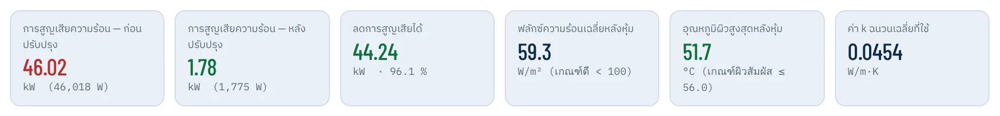
1
2
3
4
5
1
ก่อนหุ้ม 46.02 kW (46,018 W)
2
หลังหุ้ม 1.79 kW (1,789 W)
3
ลดได้ 44.23 kW · 96.1 %
4
ฟลักซ์เฉลี่ยหลังหุ้ม 59.7 W/m²
5
ผิวสูงสุดหลังหุ้ม 51.8 °C — เทียบเกณฑ์ผิวสัมผัสที่เลือก
ถังเปลือยเสียความร้อนเท่ากับเปิดฮีตเตอร์ 46.02 kW ทิ้งไว้ตลอดชั่วโมงทำงาน
ป้ายเกณฑ์ใต้การ์ดผิวสูงสุดใช้ค่าเดียวกับที่เลือกในการ์ดความปลอดภัย
ตารางรายชิ้นส่วน และการทวนอิสระ
คู่มือใช้งาน · คำนวณการสูญเสียความร้อนและฉนวนของอุปกรณ์ (Equipment Heat Loss & Insulation Calculator) · ระดับ Free
16 / 33
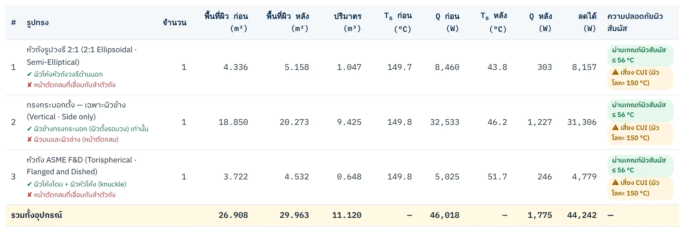
1
2
1
ลำตัว: เปลือย 32,533 W ที่ผิว 149.8 °C → หุ้มแล้ว 1,236 W ผิว 46.3 °C
2
แถวรวมทั้งอุปกรณ์
ทวนอิสระ (Churchill–Chu ผนังตั้ง + สมบัติอากาศจาก CoolProp + รังสี ε 0.79/0.15 + k ใยหินจากตาราง ASTM C547 Type II): ลำตัวเปลือย 32,534 W · หุ้มใยหิน 75 mm ผิว 46.3 °C · 1,237 W — ต่างจากเครื่องมือไม่ถึง 0.1 %
คอลัมน์ขวาสุดบอกผลความปลอดภัยผิวสัมผัส และเตือนความเสี่ยงการกัดกร่อนใต้ฉนวน (CUI) รายชิ้น
ชิ้นที่ผิวร้อนที่สุดคือหัวถังล่างที่หันลง (51.8 °C) — อากาศร้อนค้างใต้ผิวที่หันลง ระบายความร้อนได้น้อยกว่า
ขั้นตอนการคำนวณและการแทนค่า
คู่มือใช้งาน · คำนวณการสูญเสียความร้อนและฉนวนของอุปกรณ์ (Equipment Heat Loss & Insulation Calculator) · ระดับ Free
17 / 33
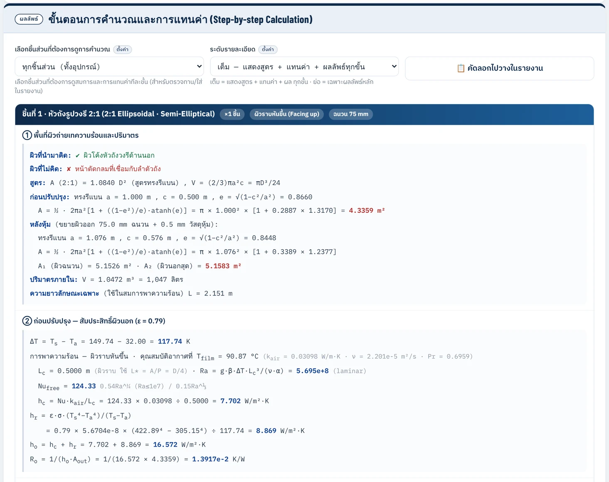
1
2
3
1
เลือกชิ้นส่วน — ทุกชิ้น หรือทีละชิ้น
2
ระดับรายละเอียด — เต็ม หรือย่อ
3
คัดลอกไปวางในรายงาน
แต่ละชิ้นแสดง 6 หัวข้อ: พื้นที่ → ค่าพาความร้อน/รังสีก่อนหุ้ม → Q ก่อน → ค่าหลังหุ้ม → ความต้านทานฉนวน → สรุป
ตัวเลขสีแดงคือผลของแต่ละขั้น — ผู้ตรวจรายงานไล่ตรวจย้อนได้ทุกบรรทัด
ขั้นที่ 6
ต้นทุนพลังงานและผลประหยัด: ข้อมูลที่กรอก
คู่มือใช้งาน · คำนวณการสูญเสียความร้อนและฉนวนของอุปกรณ์ (Equipment Heat Loss & Insulation Calculator) · ระดับ Free
18 / 33
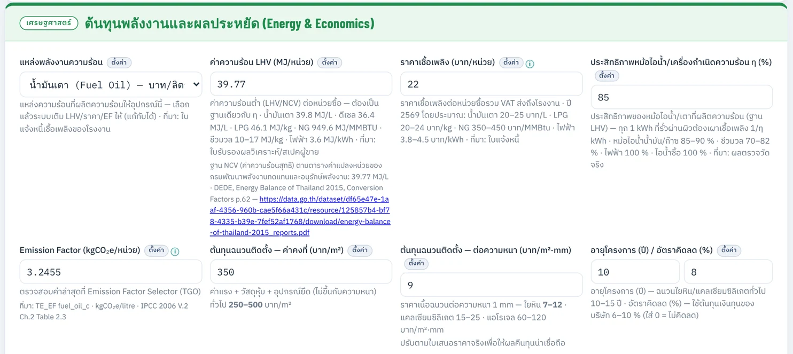
1
2
3
4
5
6
7
8
1
แหล่งพลังงานความร้อน — เลือกแล้วเติม LHV ราคา และ EF ให้
2
ค่าความร้อน LHV — ใต้ช่องบอกฐานและที่มาของค่า
3
ราคาเชื้อเพลิง
4
ประสิทธิภาพหม้อไอน้ำ/เครื่องกำเนิดความร้อน (%)
5
Emission Factor 3.2455 kgCO₂e/ลิตร — อ่านจากคลัง EF ใต้ช่องบอกคีย์ หน่วย และที่มา
6
ต้นทุนฉนวนคงที่ (บาท/m²)
7
ต้นทุนแปรตามความหนา (บาท/m²/mm)
8
อายุโครงการ (ปี) · อัตราคิดลด (%)
ต้นทุนความร้อน 2.343 บาท/kWh = 22 ÷ (39.77 ÷ 3.6 × 85 %) · ใส่ราคาฉนวนจากใบเสนอราคาจริงแทนค่าตั้งต้น
ค่าความร้อนต้องฐานเดียวกับ η (LHV) — ก๊าซธรรมชาติซื้อเป็น MMBTU ฐานค่าความร้อนสูง เครื่องมือแปลงให้เป็น 949.55 MJ/MMBTU ฐาน LHV · เลือกไอน้ำซื้อ เครื่องมือตั้ง η 100 % ให้ (ประสิทธิภาพหม้อไอน้ำอยู่ในราคาไอน้ำแล้ว)
ผลประหยัด ตารางเศรษฐศาสตร์ และที่มาของ CO₂
คู่มือใช้งาน · คำนวณการสูญเสียความร้อนและฉนวนของอุปกรณ์ (Equipment Heat Loss & Insulation Calculator) · ระดับ Free
19 / 33
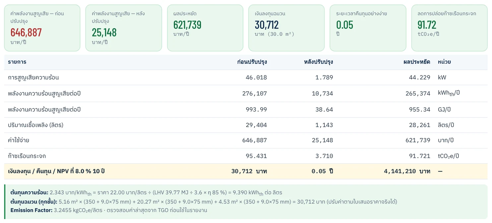
1
2
3
4
1
ผลประหยัด 621,739 บาท/ปี (ก่อน 646,887 → หลัง 25,148)
2
คืนทุน 0.05 ปี · เงินลงทุน 30,712 บาท
3
ก๊าซเรือนกระจกลดได้ 91.72 tCO₂e/ปี
4
กล่องที่มา: ต้นทุนความร้อน · ต้นทุนฉนวนทุกชั้น · EF ที่ใช้
ทวนมือ: 44.23 kW × 6,000 ชม. ≈ 265,374 kWh → ÷ 9.390 kWh/ลิตร = 28,261 ลิตร → × 3.2455 = 91.72 tCO₂e ตรงกับเครื่องมือ
NPV 10 ปี 4,141,210 บาท
⚠️ ระวัง
ก่อนใช้ตัวเลข CO₂ ในรายงานทางการ ให้ตรวจ EF ฉบับล่าสุดของหน่วยงานที่กำหนด และเลือก EF ให้ตรงชนิดเชื้อเพลิงจริง
ขั้นที่ 7
ความปลอดภัยผิวสัมผัส: เลือกเกณฑ์
คู่มือใช้งาน · คำนวณการสูญเสียความร้อนและฉนวนของอุปกรณ์ (Equipment Heat Loss & Insulation Calculator) · ระดับ Free
20 / 33
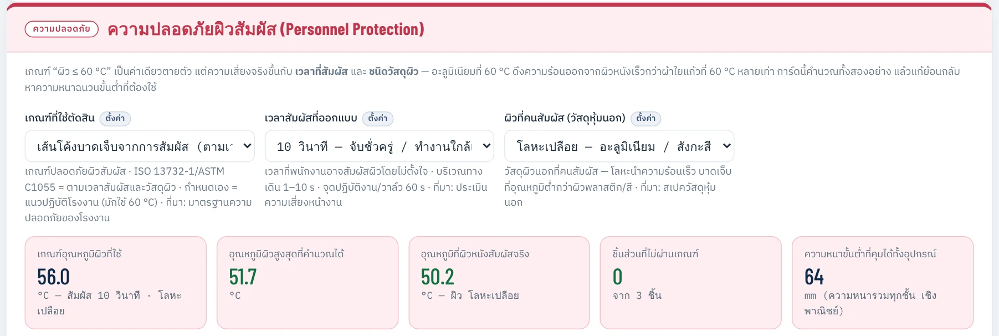
1
2
3
4
5
6
1
วิธีกำหนดเกณฑ์ — เส้นโค้งบาดเจ็บตามเวลาสัมผัส หรือกำหนดอุณหภูมิเอง
2
เวลาสัมผัสที่ออกแบบ — 1 วินาที · 10 วินาที · 60 วินาที · 10 นาที
3
ผิวที่คนสัมผัส — โลหะเปลือย · โลหะทาสี · ฉาบปูน · ผ้าใยแก้ว
4
เกณฑ์ที่ใช้ 56.0 °C — สัมผัส 10 วินาที · โลหะเปลือย
5
ผิวสูงสุดที่คำนวณได้ 51.8 °C
6
อุณหภูมิที่ผิวหนังสัมผัสจริง 50.3 °C
ป้ายเกณฑ์ทุกจุด (การ์ดผลลัพธ์ · ตาราง · กราฟแท็บ 3) ใช้ค่าเดียวกับที่เลือกในการ์ดนี้ — เปลี่ยนเวลาสัมผัส ป้ายเปลี่ยนตาม
ตารางความปลอดภัยรายชิ้น และสูตรอุณหภูมิสัมผัส
คู่มือใช้งาน · คำนวณการสูญเสียความร้อนและฉนวนของอุปกรณ์ (Equipment Heat Loss & Insulation Calculator) · ระดับ Free
21 / 33
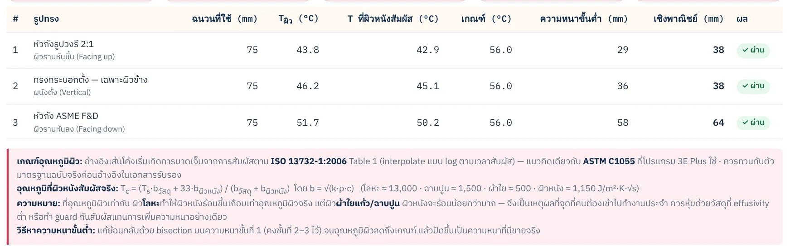
1
2
1
หัวถังล่าง: ผิว 51.8 °C · ความหนาขั้นต่ำ 59 mm → เชิงพาณิชย์ 64 mm
2
กล่องที่มาของเกณฑ์และสูตร
อุณหภูมิสัมผัสจริง = (Ts·b วัสดุ + 33·b ผิวหนัง) ÷ (b วัสดุ + b ผิวหนัง) → (51.8 × 13,000 + 33 × 1,150) ÷ 14,150 = 50.3 °C ตรงกับเครื่องมือ
ผิวโลหะนำความร้อนเข้าผิวหนังเร็ว อุณหภูมิสัมผัสจึงเกือบเท่าอุณหภูมิผิว — ผิวผ้าใยแก้ว/ฉาบปูนต่ำกว่ามาก
แท็บ 4: ตารางเกณฑ์ผิวที่เริ่มทำให้บาดเจ็บ
คู่มือใช้งาน · คำนวณการสูญเสียความร้อนและฉนวนของอุปกรณ์ (Equipment Heat Loss & Insulation Calculator) · ระดับ Free
22 / 33
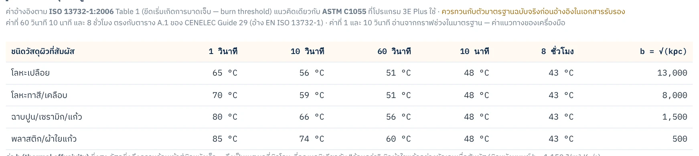
1
2
1
โลหะเปลือย: 1 วินาที 65 · 10 วินาที 56 · 60 วินาที 51 · 10 นาที 48 · 8 ชั่วโมง 43 °C
2
ที่มาของตัวเลข — อ่านป้ายให้ครบ
ค่าที่ 60 วินาที · 10 นาที · 8 ชั่วโมง ตรงกับตาราง A.1 ของ CENELEC Guide 29 (อ้าง EN ISO 13732-1)
ค่าที่ 1 และ 10 วินาที อ่านจากกราฟช่วงในมาตรฐาน — เป็นค่าแนวทางของเครื่องมือ
ผิวที่นำความร้อนช้า (ผ้าใยแก้ว พลาสติก) ทนอุณหภูมิผิวได้สูงกว่าโลหะ
⚠️ ระวัง
ก่อนอ้างอิงเกณฑ์ในเอกสารรับรอง ให้ทวนกับมาตรฐานฉบับจริงตามที่เครื่องมือเขียนกำกับไว้
ลองเปลี่ยนค่า (What-if): เกณฑ์ผิวสัมผัสเปลี่ยน ผลเปลี่ยน
คู่มือใช้งาน · คำนวณการสูญเสียความร้อนและฉนวนของอุปกรณ์ (Equipment Heat Loss & Insulation Calculator) · ระดับ Free
23 / 33
| กรณี | เกณฑ์ (°C) | ผิวสูงสุด (°C) | ชิ้นไม่ผ่าน | ความหนาขั้นต่ำ (mm) |
|---|---|---|---|---|
| โรงงาน A: จับชั่วครู่ 10 วินาที · ผิวอะลูมิเนียม | 56.0 | 51.8 | 0 | 64 |
| จุดหมุนวาล์ว: จับค้าง 60 วินาที | 51.0 | 51.8 | 1 | 89 |
| หุ้มนอกด้วยโลหะทาสี 10 วินาที | 59.0 | 51.8 | 0 | 64 |
| กำหนดเอง 60 °C (แนวปฏิบัติทั่วไป) | 60.0 | 51.8 | 0 | 50 |
| ฉนวนบางลงเหลือ 50 mm (10 วินาที) | 56.0 | 59.0 | 1 | 64 |
ทำเอง: เปลี่ยนตัวเลือกในการ์ดความปลอดภัย → อ่านผล → แก้กลับ
ฉนวน 75 mm ผ่านเมื่อจับชั่วครู่ แต่ไม่ผ่านที่จุดที่ต้องจับค้าง 60 วินาที — จุดวาล์วต้องหนาขึ้นหรือติดแผงกันสัมผัส
ลองเปลี่ยนค่า (What-if): ความหนา เชื้อเพลิง และสภาพแวดล้อม
คู่มือใช้งาน · คำนวณการสูญเสียความร้อนและฉนวนของอุปกรณ์ (Equipment Heat Loss & Insulation Calculator) · ระดับ Free
24 / 33
| กรณี | Q หลังหุ้ม (kW) | ผิวสูงสุด (°C) | ประหยัด (บาท/ปี) | ลด CO₂ (t/ปี) |
|---|---|---|---|---|
| โรงงาน A: ใยหิน 75 mm · น้ำมันเตา | 1.79 | 51.8 | 621,739 | 91.72 |
| ใยหิน 50 mm | 2.52 | 59.0 | 611,398 | 90.20 |
| ใยหิน 100 mm | 1.40 | 47.6 | 627,243 | 92.53 |
| เชื้อเพลิงก๊าซธรรมชาติ (LHV 949.55 MJ/MMBTU · EF 52.9545 kgCO₂e/MMBTU) | 1.79 | 51.8 | 497,133 | 62.68 |
| อากาศ 25 °C ลม 3 m/s (ก่อนหุ้ม 54.55 kW) | 1.97 | 35.4 | 739,208 | 109.05 |
ทำเอง: แก้ช่องในแท็บ 1 หรือเปลี่ยนเชื้อเพลิงในแท็บ 2 → อ่านผล → แก้กลับ
ความร้อนที่ประหยัดเท่ากัน แต่เงินและ CO₂ ต่างกันตามเชื้อเพลิง — ต้องเลือกเชื้อเพลิงให้ตรงกับที่ใช้จริง · ก๊าซธรรมชาติใช้ 1,055.06 × 0.90 = 949.55 MJ ฐาน LHV ต่อ MMBTU — ถ้าใส่ 1,055.06 ผลประหยัดจะต่ำไปราว 10 %
อากาศเย็นลงและมีลม ถังเปลือยเสียความร้อนมากขึ้น แต่ผิวฉนวนเย็นลงมาก — ประเมินความปลอดภัยผิวสัมผัสด้วยสภาวะที่แย่ที่สุด (อากาศร้อน ลมสงบ)
การควบคุมการกลั่นตัว (งานเย็น)
คู่มือใช้งาน · คำนวณการสูญเสียความร้อนและฉนวนของอุปกรณ์ (Equipment Heat Loss & Insulation Calculator) · ระดับ Free
25 / 33
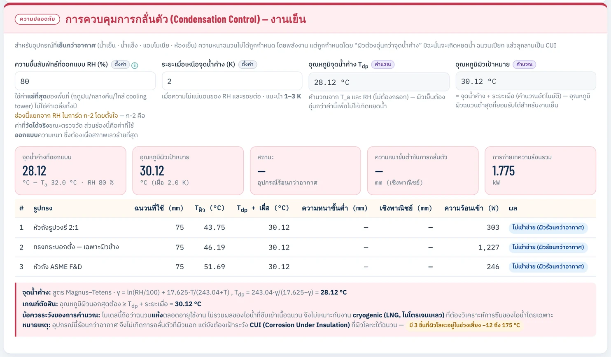
1
2
3
1
ความชื้นสัมพัทธ์ที่ออกแบบ (%)
2
ระยะเผื่อเหนือจุดน้ำค้าง (K)
3
สถานะ — ถังร้อนกว่าอากาศจึงไม่เข้าข่าย
การ์ดนี้ใช้กับอุปกรณ์เย็น เช่น ท่อน้ำเย็น ถังน้ำเย็น — ผิวฉนวนต้องอุ่นกว่าจุดน้ำค้าง 28.12 °C + ระยะเผื่อ
เคสโรงงาน A เป็นงานร้อน ตารางจึงขึ้น "ไม่เข้าข่าย (ผิวร้อนกว่าอากาศ)" ทุกชิ้น
ขั้นที่ 8
แท็บ 3: ความหนาที่คุ้มค่าที่สุด
คู่มือใช้งาน · คำนวณการสูญเสียความร้อนและฉนวนของอุปกรณ์ (Equipment Heat Loss & Insulation Calculator) · ระดับ Free
26 / 33
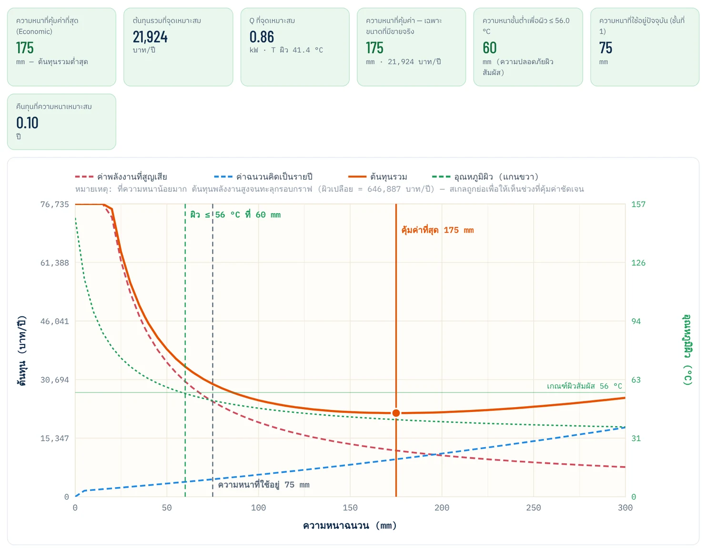
1
2
3
4
1
ความหนาที่คุ้มค่าที่สุด 175 mm — ต้นทุนรวมต่ำสุด 22,008 บาท/ปี
2
ความหนาขั้นต่ำเพื่อความปลอดภัย 60 mm
3
ความหนาที่ใช้อยู่ 75 mm
4
กราฟ: ค่าพลังงานลดลง · ค่าฉนวนเพิ่มขึ้น · จุดต่ำสุดของเส้นรวม = จุดคุ้มค่า
ตัดสินเลือกความหนาจากค่าที่มากกว่าระหว่างความหนาคุ้มค่ากับความหนาขั้นต่ำเพื่อความปลอดภัย
ช่วงก้นกราฟแบน — ความหนาใกล้ ๆ จุดคุ้มค่าให้ต้นทุนรวมต่างกันไม่มาก เลือกขนาดที่มีขายและติดตั้งง่าย
ตารางไล่ความหนา 0–300 mm
คู่มือใช้งาน · คำนวณการสูญเสียความร้อนและฉนวนของอุปกรณ์ (Equipment Heat Loss & Insulation Calculator) · ระดับ Free
27 / 33
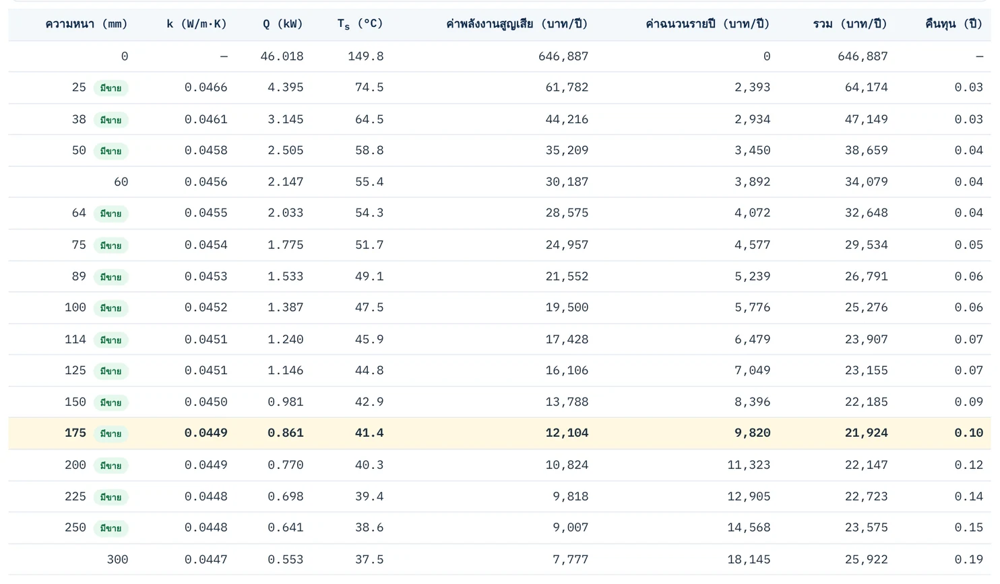
แต่ละแถว: ความหนา · k · Q · Ts · ค่าพลังงาน · ค่าฉนวนรายปี · รวม · คืนทุน
ป้าย มีขาย = ความหนาเชิงพาณิชย์ — ใช้แถวเหล่านี้เป็นตัวเลือกจริง
แถวสีเหลือง = ต้นทุนรวมต่ำสุด (175 mm)
💡 เคล็ดลับ
ค่าฉนวนรายปีคิดจากเงินลงทุน × CRF (อัตราคิดลดและอายุโครงการในการ์ดเศรษฐศาสตร์) — แก้ให้ตรงนโยบายการเงินของโรงงาน
สร้างตารางความหนาฉนวนแนะนำของโรงงาน
คู่มือใช้งาน · คำนวณการสูญเสียความร้อนและฉนวนของอุปกรณ์ (Equipment Heat Loss & Insulation Calculator) · ระดับ Free
28 / 33
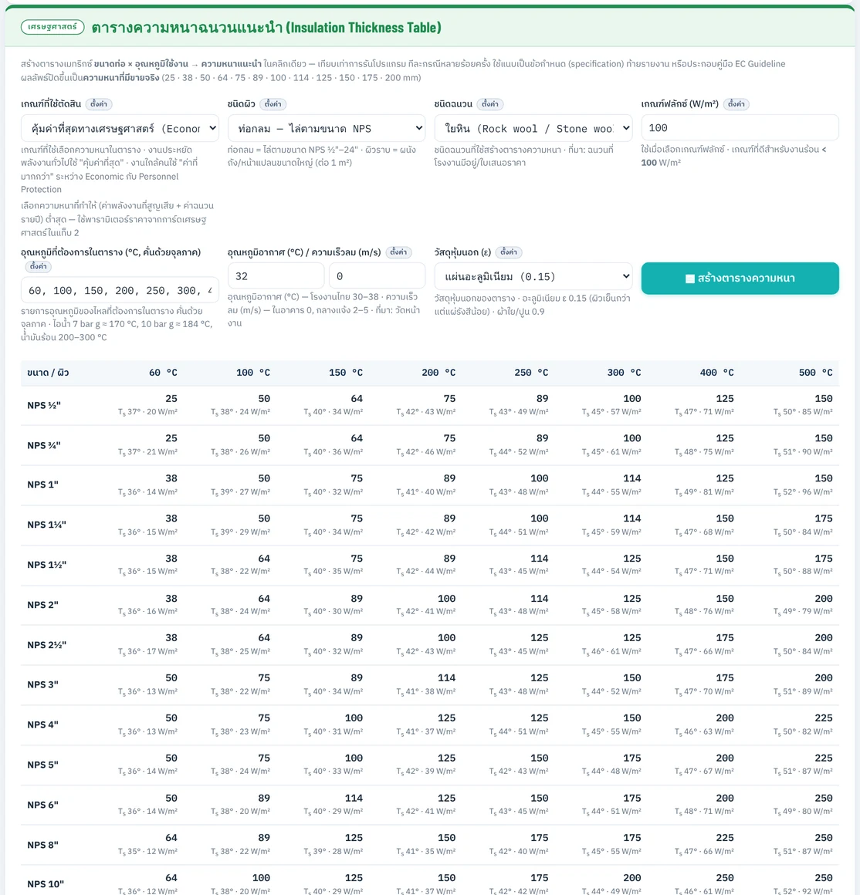
1
2
3
4
5
1
เกณฑ์ที่ใช้ตัดสิน — คุ้มค่า · ความปลอดภัย · ฟลักซ์ · ค่าที่มากกว่า
2
ชนิดผิว — ท่อตามขนาด NPS หรือผิวราบ
3
ชนิดฉนวน — แสดงชื่อเต็มในช่อง
4
อุณหภูมิที่ต้องการในตาราง (คั่นด้วยจุลภาค)
5
กด สร้างตารางความหนา
ได้ตารางขนาดท่อ × อุณหภูมิ → ความหนาแนะนำ ใช้เป็นข้อกำหนดงานฉนวนของทั้งโรงงาน
ระบุเกณฑ์และสมมติฐาน (อากาศ ลม วัสดุหุ้มนอก) กำกับตารางทุกครั้ง
บันทึกงาน และเปิดงานเดิม
คู่มือใช้งาน · คำนวณการสูญเสียความร้อนและฉนวนของอุปกรณ์ (Equipment Heat Loss & Insulation Calculator) · ระดับ Free
29 / 33
1
2
3
1
บันทึก JSON — เก็บค่าทุกแท็บ รวม 20 ชิ้นส่วนและมิติ
2
โหลด JSON — เปิดไฟล์งานเดิมกลับมาทำต่อ
3
ค่าตั้งต้น — ล้างทุกช่องกลับเป็นตัวอย่าง (บันทึก JSON ก่อนกด)
อุปกรณ์ 1 ตัว = ไฟล์ JSON 1 ไฟล์ — ตั้งชื่อตามหมายเลขอุปกรณ์
พิมพ์รายงานด้วยคำสั่งพิมพ์ของเบราว์เซอร์ หรือคัดลอกขั้นตอนการคำนวณไปวางในรายงาน
ข้อผิดพลาดที่พบบ่อย
คู่มือใช้งาน · คำนวณการสูญเสียความร้อนและฉนวนของอุปกรณ์ (Equipment Heat Loss & Insulation Calculator) · ระดับ Free
30 / 33
✗ ฐานเปลือยทั้งที่มีฉนวนเก่า
✓ เลือก มีฉนวนอยู่แล้ว — คิดเฉพาะผลส่วนเพิ่ม
✗ นับพื้นที่ซ้ำ
✓ ลำตัวที่มีหัวถังให้ใช้แบบ เฉพาะผิวข้าง
✗ ทิศทางผิวผิด
✓ หัวบนหันขึ้น · หัวล่างหันลง · ลำตัวผนังตั้ง
✗ ε ผิวเดิมไม่ตรงสภาพจริง
✓ ผิวสนิม/ทาสีแผ่รังสีแรงกว่าผิวเงามาก
✗ เกณฑ์ผิวสัมผัสไม่ตรงจุดงาน
✓ จุดหมุนวาล์วใช้ 60 วินาที ไม่ใช่ 10 วินาที
✗ ฉนวนทนอุณหภูมิไม่ถึง
✓ เทียบกับอุณหภูมิสาร ไม่ใช่ผิวนอก
✗ EF ไม่ตรงเชื้อเพลิง
✓ เลือกเชื้อเพลิงให้ตรง แล้วตรวจ EF ฉบับล่าสุด
✗ ใช้ราคาฉนวนตั้งต้น
✓ ใส่ราคาจากใบเสนอราคาจริงก่อนสรุปคืนทุน
แบบฝึกหัด: โรงงาน B ถัง MT-02
คู่มือใช้งาน · คำนวณการสูญเสียความร้อนและฉนวนของอุปกรณ์ (Equipment Heat Loss & Insulation Calculator) · ระดับ Free
31 / 33
| ข้อมูล | ค่า |
|---|---|
| รูปทรงและขนาด | เหมือนถัง MT-01 (ค่าตั้งต้น) |
| อุณหภูมิสารภายใน | 180 °C |
| ฉนวนใยหิน | 50 mm |
| อากาศรอบถัง · ลม | 32 °C · ลมสงบ |
| เกณฑ์ผิวสัมผัส | 10 วินาที · โลหะเปลือย |
| ค่าอื่นทั้งหมด | ใช้ค่าตั้งต้นของเครื่องมือ |
คำถาม — กรอกแล้วตอบ
1
Q ก่อนหุ้ม = ______ kW · หลังหุ้ม = ______ kW
2
ผิวสูงสุดหลังหุ้ม = ______ °C ผ่านเกณฑ์หรือไม่?
3
ผลประหยัด = ______ บาท/ปี · ลด CO₂ ______ t/ปี
4
แท็บ 3: คุ้มค่า ____ mm · ขั้นต่ำปลอดภัย ____ mm
💡 เคล็ดลับ
กด "ค่าตั้งต้น" ก่อนเริ่ม → แก้อุณหภูมิสารและความหนาฉนวนในแท็บ 1 → อ่านแท็บ 2 และ 3
เฉลยแบบฝึกหัด โรงงาน B
คู่มือใช้งาน · คำนวณการสูญเสียความร้อนและฉนวนของอุปกรณ์ (Equipment Heat Loss & Insulation Calculator) · ระดับ Free
32 / 33
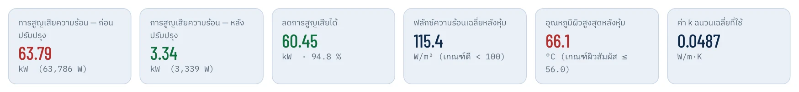
1) ก่อนหุ้ม 63.79 kW · หลังหุ้ม 3.34 kW (ลด 94.8 %)
2) ผิวสูงสุด 66.1 °C เกณฑ์ 56.0 °C — ไม่ผ่าน 2 ชิ้น (ต้องหนาอย่างน้อย 89 mm เชิงพาณิชย์)
3) ประหยัด 849,712 บาท/ปี · ลด 125.35 tCO₂e/ปี
4) ความหนาคุ้มค่า 200 mm · ขั้นต่ำเพื่อความปลอดภัย 80 mm
✓ ผ่าน
ได้ตัวเลขตรงกัน = ใช้เครื่องมือเป็นแล้ว · ถังร้อนขึ้นแต่ฉนวนบางลง ผิวเกินเกณฑ์ — ต้องเพิ่มความหนาก่อนสรุปมาตรการ
สรุป 1 หน้า (พิมพ์ติดไว้ข้างคอมพิวเตอร์)
คู่มือใช้งาน · คำนวณการสูญเสียความร้อนและฉนวนของอุปกรณ์ (Equipment Heat Loss & Insulation Calculator) · ระดับ Free
33 / 33
1
แท็บ 1 ก)
อุณหภูมิสาร · อากาศ · ลม · ชั่วโมง · ε ผิวเดิม
2
แท็บ 1 ข)
ชนิดฉนวน · ความหนา · วัสดุหุ้มนอก
3
แท็บ 1 ข-2)
ฐานก่อนปรับปรุง: เปลือย หรือ มีฉนวนเก่า
4
แท็บ 1 ค)
ประกอบชิ้นส่วน · รูปทรง · ทิศทาง · มิติ
5
แท็บ 2 ผล
Q ก่อน/หลัง · ผิวสูงสุด · ขั้นตอนคำนวณ
6
แท็บ 2 เศรษฐศาสตร์
เชื้อเพลิง · ราคา · EF → บาท/ปี · CO₂ · คืนทุน
7
แท็บ 2 ความปลอดภัย
เวลาสัมผัส · วัสดุผิว → เกณฑ์ · ผ่าน/ไม่ผ่าน
8
แท็บ 3
ความหนาคุ้มค่า · ขั้นต่ำปลอดภัย · ตารางแนะนำ · บันทึก JSON
อ่านผลแล้วตรวจ
☐
ฐานก่อนปรับปรุงตรงสภาพจริง
☐
ไม่นับพื้นที่ซ้ำ
☐
เกณฑ์ผิวสัมผัสตรงจุดงาน
☐
EF และราคาเชื้อเพลิงล่าสุด
อ.หนึ่ง กลับทวี / Aj. Nueng Klubtavee
tripleeenergytools.com
tripleeenergytools.com